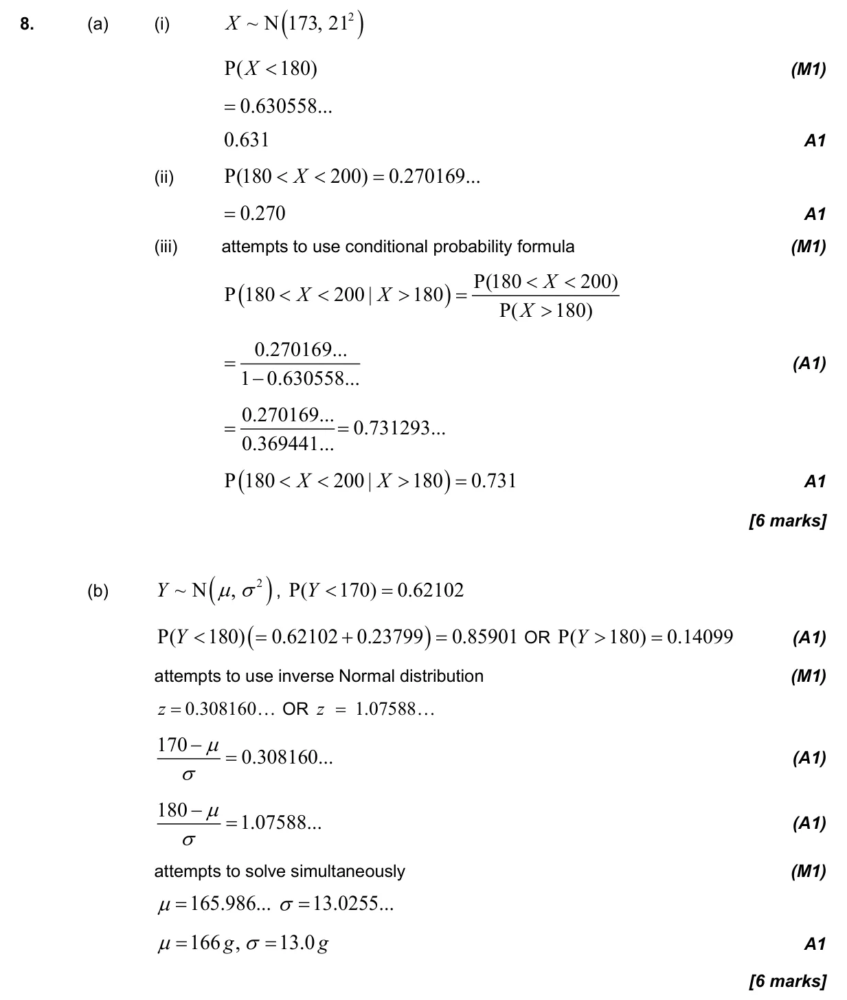
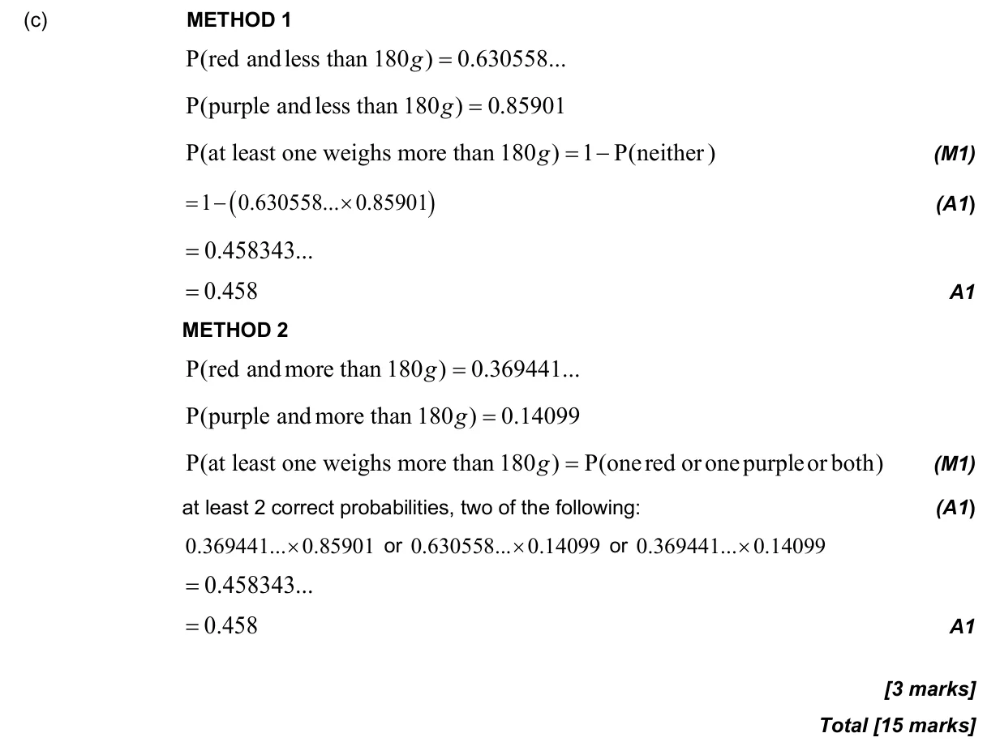

15 marks P2 TZ2 Section B Calculator Appears in AA SL P2 Q8AA HL P2 Q10 4.12 Standardization of normal variables4.9 Normal distribution and calculations4.11 Formal conditional probability and independence4.5 Probability concepts and expected numbers4.6 Combined, mutually exclusive, conditional, independence and probability diagrams Question Hide breakdown abc Markscheme 